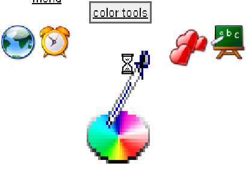

2.2.1 FishEye
The FishEye is a dynamic tool bar. The size of icons on the tool bar varies according
to the mouse position with respect to the icon. The icons are active ones, in a sense
they can be associated with a command which will be triggered when the icon is
activated.
2.2.1.1 Create the FishEye component
Before being able to create a FishEye instance, the appropriate import declaration
should be added to the class:
import com.objetdirect.tatami.client.FishEye;
It is then possible to create an instance of the FishEye. The simplest and most
common way is to use the default constructor:
FishEye fe =
new FishEye();
This will create a FishEye component with the default behavior: the icon sizes
will vary between 50 and 200 pixels, and they will be laid out horizontally. When the
icons are magnified by the mouse proximity, they stay centered on the FishEye. The
icon title appears just below the icon.
This behavior can be differentiated by using one of the two remaining
constructors with parameters.
The first constructor has only the most frequently used parameters: the minimum
and maximum icon sizes as well as the component orientation. For instance, here is
the creation of a vertical FishEye with icon sizes varying from 40x40 pixels to
400x200 pixels:
FishEye fe =
new FishEye(40, 40, 400, 200, FishEye.VERTICAL);
And the corresponding result:
The last constructor allows the specification of all available Dojo parameters. It is
therefore slightly more complex to use, some parameters are even not completely
understood by the Tatami team!
Those parameters are (in order):
-
itemWidth:
- width of menu item (in pixels) in it’s dormant state (when the
mouse is far away)
-
itemHeight:
- height of menu item (in pixels) in it’s dormant state (when the
mouse is far away)
-
itemMaxWidth:
- width of menu item (in pixels) in it’s fully enlarged state
(when the mouse is directly over it)
-
itemMaxHeight:
- height of menu item (in pixels) in it’s fully enlarged state
(when the mouse is directly over it)
-
orientation:
- orientation of the icons bar : FishEye.VERTICAL et
FishEye.HORIZONTAL.
-
effectUnits:
- controls how much reaction the menu makes, relative to the
distance of the mouse from the menu
-
itemPadding:
- padding (in pixels) between each menu item
-
attachEdge:
- Controls the border that the menu items don’t expand past;
for example, if set to "top", then the menu items will drop downwards
as they expand. FishEye.CENTER, FishEye.TOP, FishEye.BOTTOM,
FishEye.LEFT, FishEye.LEFT, FishEye.RIGHT.
-
labelEdge:
- Controls were the labels show up in relation to the menu item icons
: FishEye.CENTER, FishEye.TOP, FishEye.BOTTOM, FishEye.LEFT,
FishEye.LEFT, FishEye.RIGHT.
-
conservativeTrigger
- :if true, don’t start enlarging menu items until mouse is
over an image; if false, start enlarging menu items as the mouse moves
near them.
Here is an example of the use of this constructor:
FishEye fe =
new FishEye(40, 40, 200, 400, FishEye.HORIZONTAL, 1, 0, FishEye.TOP, FishEye.RIGHT,
true);
And here is the corresponding result:

Instantiating the FishEye is not enough by itself to have it displayed. It has to be
hanged in the GWT widget tree.
For a FishEye positioned on the upper left corner of the page body, you should
write:
RootPanel rootPanel = RootPanel.get(); rootPanel.add(fe, 50, 50);
Take attention to have some margin around the FishEye (50 pixels in both
dimensions in the example), otherwise the icons could appear partly outside the
page.
2.2.1.2 Adding and removing icons
A FishEye with no icon is useless. The add method can be used to add new icons to
the component.
Command cmd =
new Command() {
public void execute() {};
}
fe.add("amor.png", "drap’n’drop", cmd);
This method requires three parameters:
-
icon:
- The URL of the icon to be displayed, as a String,
-
caption:
- The title which is displayed near the icon
-
command:
-
A command implementation (com.google.gwt.user.client.Command) that
will be activated when the icon will be selected. .
The remove method, as the reader will have easily guessed, can be used to remove an
icon from the FishEye, given its URL:
It is possible to add and remove icons dynamically, that is while the FishEye is
displayed.
2.2.1.3 API of the FishEye
We saw how to add or remove icons from the menu. These two methods are the most
important; however the FishEye class provides some other method which can be
useful: get the added icons, the command associated…
-
int countItems():
- Counts the number of item in the FishEye menu.
-
int indexOf(String):
- Returns the index position in the FishEye menu of an
icon.
-
Command getCommand(String):
- Returns the Command of the icon from
the URL of the associated icon.
-
Command getCommand(int):
- Returns the command at the index position
in the FishEye menu.
-
String[] getIcons():
- Returns all the icons from the FishEye menu.
-
String getIcon(int):
- Returns the URL of the icon at the index position.